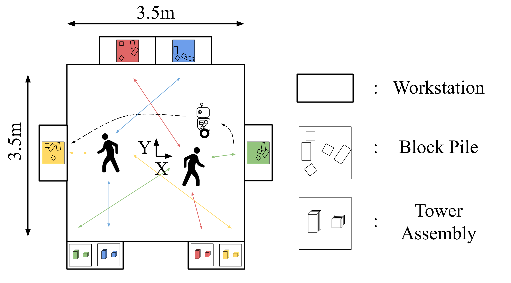

Experimental Setup
Our experimental setup is modeled after constrained, indoor domains of interest such as hospitals, homes, and warehouses. Participants cross the workspace picking and stacking blocks at different workstations, while the robot moves between them. The structure facilitates consistent, multihuman-robot interactions in the shared space.

To enhance the applicability of our findings, our study was run at both the University of Michigan in the USA and LAAS-CNRS at the University of Toulouse in France, with distinct robots at each site.

UM

LAAS
BibTeX
@article{stratton2026pred2nav,
author = {Stratton, Andrew and Singamaneni, Phani Teja and Goyal, Pranav and Alami, Rachid and Mavrogiannis, Christoforos},
title = {How Human Motion Prediction Quality Shapes Social Robot Navigation Performance in Constrained Spaces},
journal = {Proceedings of the ACM/IEEE International Conference on Human Robot Interaction (HRI)},
year = {2026},
}